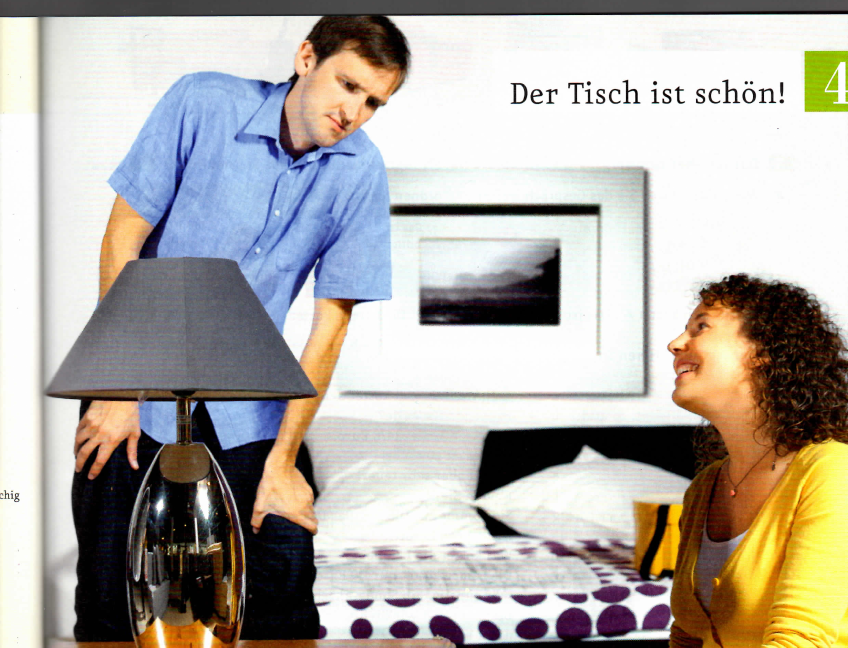
Zeigen Sie auf dem Foto und nennen Sie die Wörter.
Hilfe finden Sie im Bildlexikon auf Seite 26 und 27.
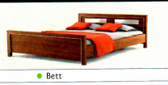
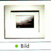
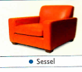
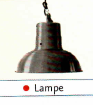
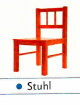
aWas passt? Hören Sie das Gespräch weiter und ordnen Sie zu.
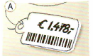
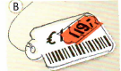
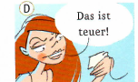
bWer sagt was? Hören Sie noch einmal und kreuzen Sie an. cOrdnen Sie die Sätze in b.
aOrdnen Sie die Wörter aus dem Bildlexikon zu.
bArtikeltanz: Hören Sie die Nomen und tanzen Sie.
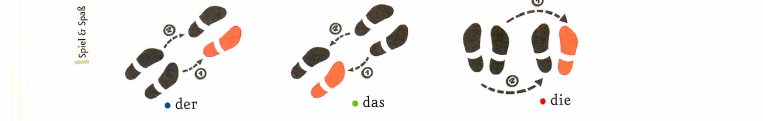
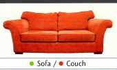
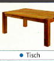
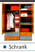
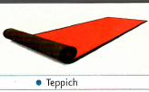
aHören Sie und notieren Sie die Preise.
bGespräche üben: Nach Preisen fragen und Preise nennen. Arbeiten Sie zu zweit auf Seite 79.
aWas sagt der Verkäufer aus 3b? Kreuzen Sie an. Ergänzen Sie dann die Tabelle.
bPuzzle: Was kostet der Schrank? Arbeiten Sie zu zweit auf Seite 79.
aSehen Sie die Bilder an. Was ist das Problem? Kreuzen Sie an.
bWie finden Sie die Aufgabe?
9Gespräche üben: etwas bewerten. Arbeiten Sie zu zweit auf Seite 80.
Sprechtraining
Übersetzen Sie die Gespräche in 10 in Ihre Muttersprache.
Grammatik
| definiter Artikel der/das/die | ||
|---|---|---|
| Nominativ Singular | definiter Artikel | |
| • maskulin | Der Tisch | ist schön. |
| • neutral | Das Bett | |
| • feminin | Die Lampe | |
| Personalpronomen er/es/sie | ||
|---|---|---|
| • maskulin | der Tisch: | Er kostet … |
| • neutral | das Bett: | Es kostet … |
| • feminin | die Lampe: | Sie kostet … |
Kommunikation
Beratungsgespräche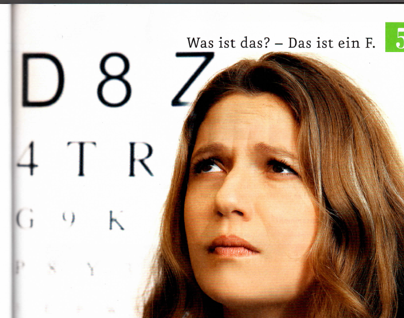
aWas ist das? Sehen Sie das Foto an, hören Sie und kreuzen Sie an.
bWas sehen Sie hier? Markieren Sie und sprechen Sie.
F Ⓟ R | 3 6 8 | F T Y | 3 5 8 | V U O | H W R
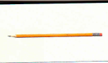
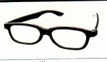
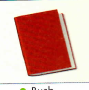
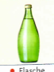
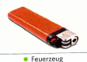
aLesen Sie den Comic und ergänzen Sie die Tabelle.
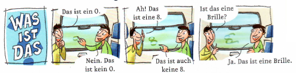
bWie übersetzen Sie ein/eine – kein/keine? Übersetzen Sie den Comic in Ihre Muttersprache.
cSpielen Sie wie im Comic: Was ist das? Zeichnen Sie Gegenstände aus dem Bildlexikon oder Möbel (Lektion 4) an die Tafel. Die anderen raten.
aOrdnen Sie die Produktinformationen den Brillen zu.
bLesen Sie den Text in a noch einmal und ergänzen Sie.
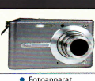
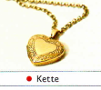
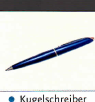
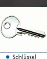
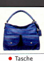
aZeichnen Sie eine Brille in das Foto.
bSchreiben Sie eine Produktinformation zu „Ihrer“ Brille. Mischen Sie die Texte und suchen Sie die passende Brille im Kurs.
Die Brille ist rot und eckig, …
Arbeiten Sie auf Seite 84.
aHören Sie und ordnen Sie die Gespräche den Fotos zu.
bErgänzen Sie das Wort, markieren Sie den richtigen Artikel und das richtige Pronomen und ordnen Sie die Farben zu.
cWer sagt was? Ordnen Sie zu.
Entschuldigung, wie heißt das auf Deutsch? | Wie schreibt man …? | Kein Problem. | Das ist eine … | Noch einmal, bitte. | Das ist eine Uhr.
dGespräche üben: nach Wörtern fragen. Arbeiten Sie zu zweit auf Seite 85.
Schreibtraining
aSehen Sie die Produkte und die Bestellung an. Welche Informationen fehlen? Ergänzen Sie.
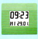
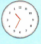
bWelche Uhr möchten Sie bestellen? Ergänzen Sie die Bestellung und Ihre persönlichen Angaben.
| Bestellnummer | Produktname | Farbe | Material | Menge | Preis |
|---|---|---|---|---|---|
Grammatik
| indefiniter Artikel ein/eine und Negativartikel kein/keine | ||
|---|---|---|
| indefiniter Artikel | Negativartikel | |
| Das ist … | ||
| • maskulin | ein Schlüssel | kein Schlüssel |
| • neutral | ein Buch | kein Buch |
| • feminin | eine Brille | keine Brille |
Kommunikation
nach Wörtern fragen / Wörter nennen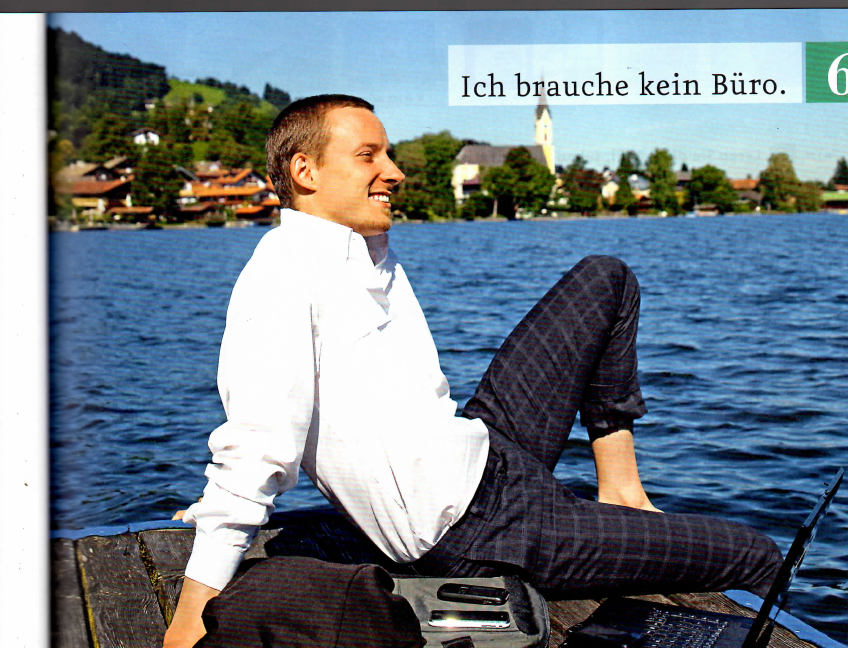
aSehen Sie das Foto an und hören Sie. Wie finden Sie diesen Arbeitsplatz?
bMöchten Sie so arbeiten?
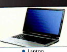
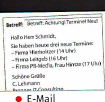
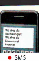
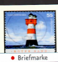
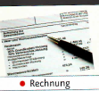
Christian Schmidt | Hierholtzer | Brenner | PR-Media | Leitgeb | Frau Hintze | C. Lehmann
Hören Sie noch einmal und ordnen Sie zu. CHRISTIAN SCHMIDT = C, FRAU FESER = F, EVA = E, HERR BRENNER = B
Lesen Sie die SMS und ergänzen Sie die Tabelle.
aWählen Sie zwei Wörter aus dem Bildlexikon. Suchen Sie die Pluralform im Wörterbuch.
bSammeln Sie „Ihre“ Wörter im Plural an der Tafel.
cder Stuhl – die Stühle: Finden Sie die Unterschiede. Arbeiten Sie zu zweit auf Seite 83.
aHören Sie das Gespräch mit Frau Feser noch einmal und ergänzen Sie.
| Nominativ | Akkusativ |
|---|---|
| Da ist … • der Schlüssel • das Papier • die Rechnung | Ich habe … • den Schlüssel • das Papier • die Rechnung |
| Da sind … • die Stifte | Ich habe … • die Stifte auch so bei: brauchen, suchen, … |
bWas suchen Sie? Spielen Sie ähnliche Dialoge.
der Drucker | das Papier | der Kalender | die Rechnung | …
aWie viele … haben Sie? Ergänzen Sie die Endungen und füllen Sie dann den Fragebogen aus.
bWie viele … hat Ihre Partnerin / Ihr Partner? Sprechen Sie.
| Akkusativ · Ich habe … | |||
|---|---|---|---|
| • einen | keinen | Laptop | |
| • ein | kein | Telefon | |
| • eine | keine | Maus | |
| • – | keine | Laptops | |
| auch so bei: brauchen, suchen, … | |||
Sprechtraining
aEin Anruf bei Christian Schmidt. Ordnen Sie zu.
Brenner IT-Consulting. Guten Tag. Hier ist Christian Schmidt. | Tschüs. | Brenner IT-Consulting. | Schmidt. | Christian Schmidt. | Guten Tag, hier ist Marlene Neumann. | Marlene Neumann hier. Guten Tag, Herr Schmidt. | Hallo, hier ist Marlene. | Auf Wiedersehen. | Auf Wiederhören.
bWerfen Sie einer Person den Ball zu. Sie/Er meldet sich (Person A). Dann melden Sie sich (Person B).
cWie meldet man sich in anderen Ländern am Telefon? Erzählen Sie.
Grammatik
| Artikel im Singular und Plural | |
|---|---|
| Singular | Plural |
| • der/ein/kein Schlüssel | die/–/keine Schlüssel |
| • das/ein/kein Formular | die/–/keine Formulare |
| • die/eine/keine Briefmarke | die/–/keine Briefmarken |
| Nomen: Singular und Plural | ||
|---|---|---|
| Singular | Plural | |
| -e/¨e | der Stift der Schrank | die Stifte die Schränke |
| -(e)n | die Briefmarke die Rechnung | die Briefmarken die Rechnungen |
| -s | das Sofa | die Sofas |
| -er/¨er | das Bild das Notizbuch | die Bilder die Notizbücher |
| -/¨ | der Kalender | die Kalender |
Kommunikation
Telefongespräche| definiter Artikel | indefiniter Artikel | Negativartikel | ||
|---|---|---|---|---|
| • maskulin | Sie hat den | einen | keinen | Schlüssel. |
| • neutral | das | ein | kein | Formular. |
| • feminin | die | eine | keine | Briefmarke. |
| • Plural | die | – | keine | Stifte. |
Lesemagazin
Film-Stationen Clips 4–6
Die Videoclips 4–6 sind nicht Teil der vorliegenden Materialien, deshalb fehlen sie hier. Die Aufgaben sind trotzdem vollständig lösbar. · مقاطع الفيديو ٤-٦ مش موجودة في المواد المتاحة، لكن التمارين كاملة هنا.
Das ist ein/eine … – Was ist das? Markieren Sie die Souvenirs.
brauchen | haben | sein | suchen
Projekt Landeskunde
In Leipzig ist der Nachtflohmarkt schon Tradition und ist die Nummer eins in Sachsen. Sie stöbern und handeln gern? Dann sind Sie hier richtig. Von 16.00 Uhr bis 24.00 Uhr kommen 200 Händler und zwischen 2000 und 3000 Besucher zu dem Trödel-Event. Hier finden Sie alles aus Omas Zeiten: Bücher, Taschen, Uhren, Möbel, Kleidung und vieles mehr.
Informationen für Verkäufer: KEINE NEUWARE! Der Aufbau ist ab 13 Uhr. Standpreise: 7,– Euro pro Meter (Tische bitte selbst mitbringen!)
Wo? An den Tierkliniken 42, 04103 Leipzig, Leipzig Zentrum-Südost
Wann? Sa. 21.05.
Geöffnet für Besucher: 16 bis 24 Uhr
Eintritt: 2,– Euro, Kinder bis 12 Jahre frei
aWählen Sie einen Gegenstand und schreiben Sie eine Produktbeschreibung wie im Beispiel. Bringen Sie den Gegenstand und die Beschreibung mit in den Kurs.
bMachen Sie einen Flohmarkt im Kurs.
Ausklang
Hubertus Grille braucht eine Brille